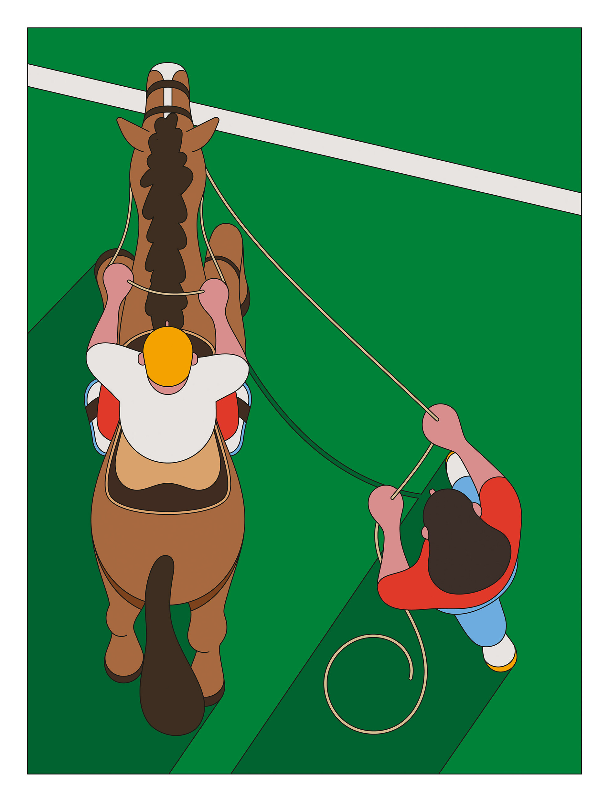

Camilo Huinca's work is rich with colour, content and a brightly illustrated narrative that speaks for itself. Born and raised in Santiago in Chile, Camilo has divided his career between graphic design and painting. Working independently has allowed Camilo to “develop (his) own style, having a main focus on the use of curiosity,” he explains.
In 2014 Camilo set up Perfe Studio where he concentrates on graphic design projects in “a more commercial way”. However, within illustration, he described his main motivation as, “to be able to generate a communication method based on simplicity and synthesis, with few tools and colours. I am interested in identifying people’s behaviour, portraying activities, intimate moments, body gestures, disfiguring objects and reducing the amount of detail in a composition.”
Camilo is fascinated by everyday scenes, moments and personal habits, often depicting scenic bus routes, art galleries and public figures in his own psychedelically shaped style. “Within my work I try to reproduce real moments from an innocent and impartial perspective.”